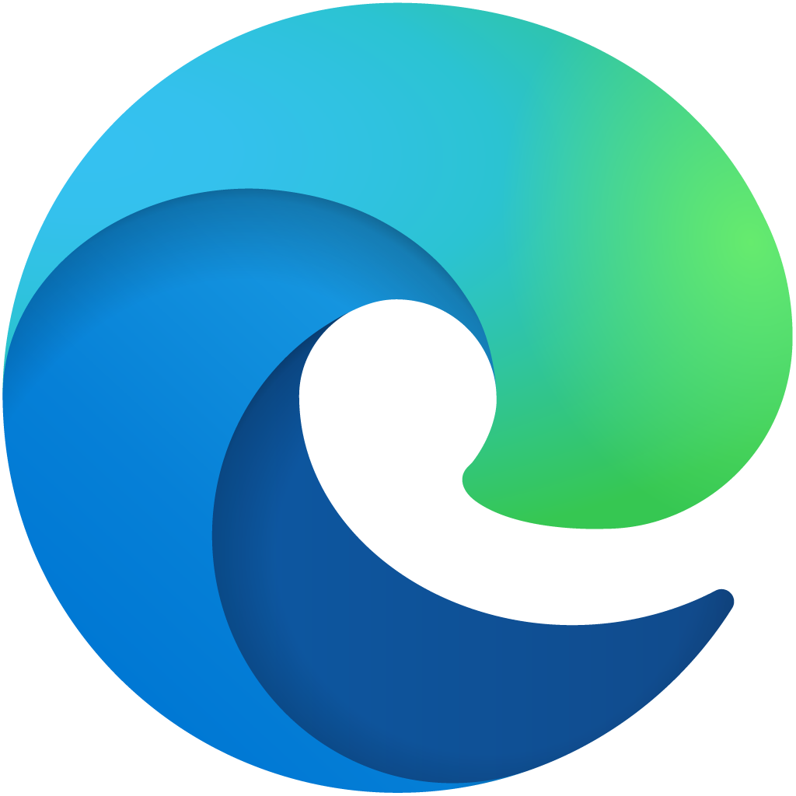

Sobre a Microsoft
A Microsoft, fundada em 1975 por Bill Gates e Paul Allen, é uma das maiores empresas de tecnologia do mundo. Criada para desenvolver softwares, revolucionou a computação pessoal com o Windows e o pacote Office. Hoje, atua também em serviços de nuvem (Azure), videogames (Xbox) e soluções de Inteligência Artificial (Copilot).

Microsoft Edge
É o navegador de internet oficial da Microsoft, lançado em 2015 para substituir o Internet Explorer. Reconstruído sobre a estrutura Chromium, ele se destaca pela alta velocidade, segurança avançada e baixo consumo de memória. O Edge oferece recursos nativos de produtividade como leitores de PDF integrados e organização de abas além de contar com integração direta com a IA do Copilot e sincronização completa com o ecossistema Windows.
